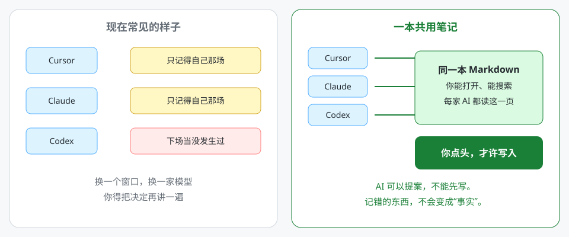
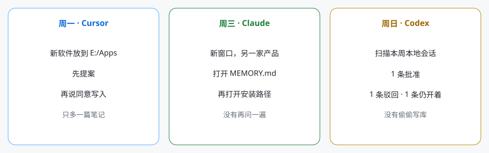

周一 · Cursor
写下一条事实
新软件放到 E:/Apps。先提案，再说「同意写入」。只多一篇笔记。
早上跟 Cursor 说好下载目录。晚上 Claude 又问一遍。下周 Codex 当没这回事。不是模型笨，是每家各记各的，而且那本账你通常打不开。
长期要记住的东西，写成你能打开的笔记。所有 AI 都读同一本。模型可以提案，你点头才许写。

林可是虚构的。下面三个文件是真的。周一写入，周三另一家 AI 读到，周日只出清单。

新软件放到 E:/Apps。先提案，再说「同意写入」。只多一篇笔记。
新窗口，另一家产品。从 MEMORY.md 进，再读安装路径。没有再问文件该放哪。
打开 MEMORY.md扫描本周本地会话。一条批准，一条驳回，一条还开着。正文一篇没动。
打开当周提案shared/install-path.md，变更号 MEM-20260824-01。把这段贴进每一家 AI 的规则，改掉文件夹路径。
长期记忆是一个本地 Markdown 文件夹。 先读 MEMORY.md，再只打开索引点名的那几篇。 不要把整个文件夹读完。 除非我明确说「记住 / remember / 同意写入 / approve write」，不要写笔记。 先提最小改动。 不要存 Token、密码、Cookie。
用 AI 的人会越来越多。一个人同时用两家、三家，也会越来越普通。厂商不会帮你在 Cursor 和 Claude 之间同步「上周拍板的那件事」。你需要一本自己的记忆，不是六本厂商记忆。
自动记忆失败得很危险：它写错了，还接着用。这套方法失败得很无聊：你忘了写一条。